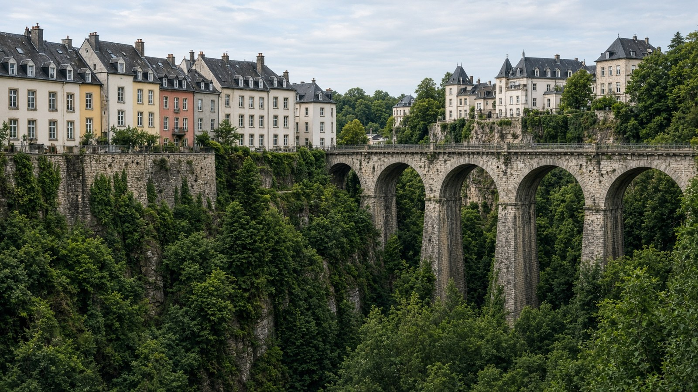

أوروبا
لوكسمبورغ
Luxembourg
مركز مالي أوروبي.
- العاصمة
- لوكسمبورغ
- نظام الحكم
- دوقية — ملكية دستورية
- التأسيس / الاستقلال
- 1839
- النوع
- ملكية
منذ التأسيس
دوقية مستقلة منذ 1839. عاصمتها لوكسمبورغ.
معالم
- معمارالمدينة القديمة
منحدرات.
- طبيعةوادي موزيل
كروم.
- معماركينيرش
حصون.